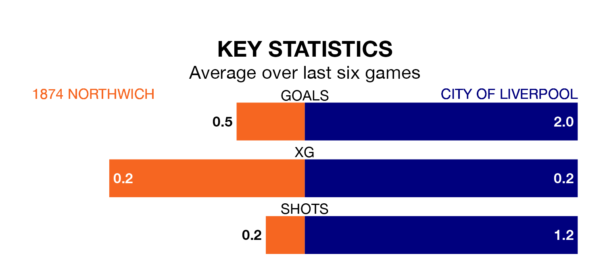

City of Liverpool are strong favourites to take all three points despite 1874 Northwich's home advantage in Saturday's match.
*Betting Company* are offering odds of 1.8 on City of Liverpool sealing the win, with the visitors sitting 13th in the Northern Premier League Division One West table.
1874 Northwich, who are 20th in the league and 17 points behind City of Liverpool, are priced at 3.6 to win. A draw is set at 3.6.
1874 Northwich are in terrible form in the Northern Premier League Division One West, with no wins and a draw from their last six games.
With two wins and a draw over that period, City of Liverpool's form is much better – they have taken seven points from 18, compared to the hosts' one.
With 19 goals in 26 games so far this season, 1874 Northwich are the league's lowest scorers with 0.7 goals per game. And they are conceding more than average, letting in 57 goals at a rate of 2.2 per game.
The away team, meanwhile, are above average scorers, with 1.8 goals per game, compared to a league average of 1.4. They have conceded 1.5 goals per game.
In the last 10 years, 1874 Northwich and City of Liverpool have played each other on six occasions. 1874 Northwich won four of them, City of Liverpool one, and they drew once.
On average, 1874 Northwich scored 1.7 goals and City of Liverpool 1.2 in those matches.
Their last meeting was on September 30, when 1874 Northwich won 2-1 away.
1874 Northwich's last match was on February 10, a 4-0 loss against Trafford.
City of Liverpool lost 4-1 against Prescot Cables last time out, on February 3.
Updated: 13:04 (UTC), 16/02/24